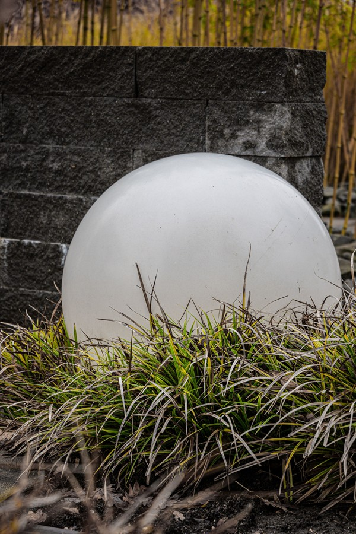
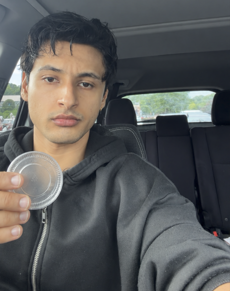
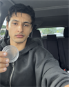

Original Image and Format Conversions
Open the source or a genuine saved conversion. Grayscale stores shades of gray; the one-bit black-and-white version uses only two tones.
This page compares two original photographs with saved format conversions and resized copies. I use CSS to change display size, deliberately distort proportions, and enlarge a small file to see how source resolution affects image quality.
This garden photograph places a glowing white sphere among plants. Its bright subject and detailed surroundings make changes in contrast and sharpness easy to compare. Photograph by Strannik SK, from the original Pexels photo. Original: 4000 × 6000 pixels, JPG, 3.862293 MB.
Open the source or a genuine saved conversion. Grayscale stores shades of gray; the one-bit black-and-white version uses only two tones.
This CSS demonstration uses an optimized 1400 × 2100 JPEG copy derived from the original 4000 × 6000 photograph. CSS displays the copy at 180 pixels wide without changing its stored pixel dimensions. The unchanged full-resolution photograph remains available through the original-image link above.
The 600 × 900 version preserves the original 2:3 proportions while storing fewer pixels. A smaller source can reduce download and decoding work for normal website display.

These four examples intentionally distort the resized file. The normal display is 180 pixels wide; its proportional height is 270.0 pixels. Each example keeps one of those dimensions unchanged.
The smaller file has about one quarter of the reduced image's width and height, rounded to whole pixels. Both images are displayed 300 pixels wide at the same proportional height so the quality difference is easier to see. Enlarging the smaller source softens edges and textures because CSS cannot restore missing detail.
File dimensions determine the available detail; CSS determines how large that detail appears. Changing both display dimensions proportionally preserves shapes. A low-resolution source loses clarity when enlarged.
| Version | Pixels | Format | MB |
|---|---|---|---|
| Original | 4000 × 6000 | JPG | 3.862293 |
| Reduced | 600 × 900 | JPG | 0.205295 |
| Quarter-Size | 150 × 225 | JPG | 0.016274 |
| GIF | 4000 × 6000 | GIF | 14.467259 |
| Grayscale | 4000 × 6000 | PNG (8-bit gray) | 12.674774 |
| Black And White | 4000 × 6000 | PNG (1-bit) | 2.113303 |
The reduced JPEG is 94.7% smaller in storage. JPEG uses lossy compression suited to photographs. GIF uses a limited palette of up to 256 colors, which can simplify photographic gradients. PNG grayscale and one-bit conversions change tonal information; their storage sizes also depend on compression. Fewer colors do not guarantee a smaller file than a well-compressed JPEG.
My photograph shows me holding a clear round cup lid. The circular rim provides a useful reference: changing only one display dimension makes it look flatter or narrower. Preserving proportions keeps the lid's photographed shape intact. Original: 460 × 582 pixels, PNG, 0.399804 MB.
Open the source or a genuine saved conversion. Grayscale stores shades of gray; the one-bit black-and-white version uses only two tones.
CSS changes the displayed size, but the browser still downloads the original 460 × 582 pixels and 0.399804 MB file.

The source is only 460 pixels wide, so a 600-pixel version would enlarge it. I reduced it to 400 × 506 instead; the proportional height is rounded to the nearest whole pixel. A smaller source can reduce download and decoding work for normal website display.
These four examples intentionally distort the resized file. The normal display is 180 pixels wide; its proportional height is 227.7 pixels. Each example keeps one of those dimensions unchanged.
The smaller file has about one quarter of the reduced image's width and height, rounded to whole pixels. Both images are displayed 300 pixels wide at the same proportional height so the quality difference is easier to see. Enlarging the smaller source softens edges and textures because CSS cannot restore missing detail.

File dimensions determine the available detail; CSS determines how large that detail appears. Changing both display dimensions proportionally preserves shapes. A low-resolution source loses clarity when enlarged.
| Version | Pixels | Format | MB |
|---|---|---|---|
| Original | 460 × 582 | PNG | 0.399804 |
| Reduced | 400 × 506 | PNG | 0.423656 |
| Quarter-Size | 100 × 126 | PNG | 0.032344 |
| GIF | 460 × 582 | GIF | 0.144650 |
| Grayscale | 460 × 582 | PNG (8-bit gray) | 0.129395 |
| Black And White | 460 × 582 | PNG (1-bit) | 0.026652 |
The reduced PNG is actually larger in storage than the original despite having fewer pixels. Different encoding and compression settings can outweigh a modest dimension reduction. PNG uses lossless compression and supports transparency. GIF uses a limited palette of up to 256 colors, which can simplify photographic gradients. PNG grayscale and one-bit conversions change tonal information; their storage sizes also depend on compression. Fewer colors do not guarantee a smaller file than a well-compressed JPEG.